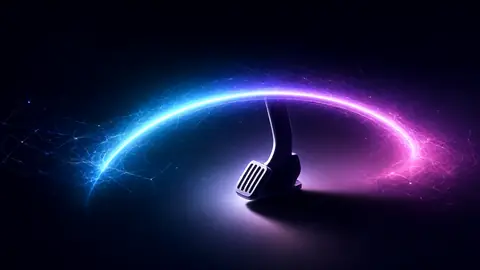

Мини-тренинг · 1–1,5 часа · онлайн
Финансовый страх. Денежная броня
Много делаешь, но деньги словно проходят мимо?
Для предпринимателей, фрилансеров, экспертов и руководителей, которые много делают, но деньги словно проходят мимо
Это для вас, если
- Прикладываешь усилия, но доход не растёт.
- Боишься, что за большие деньги придётся дорого заплатить.
- Ловишь себя на мыслях: «деньги портят», «больше — небезопасно».
- Хочешь большего, но саботируешь шаги, ведущие к деньгам.
Что вы получите
- Увидишь, как финансовый страх маскируется под «разумные» доводы.
- Узнаешь, какие глубинные установки «защищают» тебя от денег.
- Поймёшь, как страх способствует сливу денег — даже при высоких доходах.
Формат
- Групповая глубокая диагностика с лёгким разворотом.
- Смотреть могут многие, активно играют 5–6 участников.
- МАК-карты и вопросы ведущей.
- Только вживую, без записи.
Следующий шаг
Полный тренинг «Финансовый страх. Освобождение»
А что меня не пускает к моей финансовой цели?
Бесплатно
Перед записью — разберитесь глубже
🎧 Послушать · 1:10Энциклопедия: страхи и тормоза
 2:23Страхи и тормоза · 2 минСтрах успехаПочему мы тормозим за шаг до цели. Как страх успеха маскируется под лень, «не время» и внезапные болезни проектов.✓ прочитано2:42Страхи и тормоза · 2 минСиндром самозванцаОщущение, что ваш успех — случайность, а вас вот-вот «разоблачат». Откуда оно берётся и как перестать отдавать ему руль.✓ прочитано2:24Страхи и тормоза · 2 минБазовый страх и базовое довериеФоновая тревога, когда «вроде всё хорошо, но внутри ждёшь подвоха». Что психология говорит о базовом доверии к миру.✓ прочитано
2:23Страхи и тормоза · 2 минСтрах успехаПочему мы тормозим за шаг до цели. Как страх успеха маскируется под лень, «не время» и внезапные болезни проектов.✓ прочитано2:42Страхи и тормоза · 2 минСиндром самозванцаОщущение, что ваш успех — случайность, а вас вот-вот «разоблачат». Откуда оно берётся и как перестать отдавать ему руль.✓ прочитано2:24Страхи и тормоза · 2 минБазовый страх и базовое довериеФоновая тревога, когда «вроде всё хорошо, но внутри ждёшь подвоха». Что психология говорит о базовом доверии к миру.✓ прочитано
0:51🛑Кто жмёт на тормоза?8 ситуаций — и вы узнаете, какой внутренний «тормоз» чаще всего останавливает вас на пути к цели.2 мин · бесплатно✓ пройден 0:55💰Мой денежный сценарий12 утверждений о деньгах. Узнайте, какой сценарий сильнее всего влияет на ваши траты, цены и доход.3 мин · бесплатно✓ пройден
0:55💰Мой денежный сценарий12 утверждений о деньгах. Узнайте, какой сценарий сильнее всего влияет на ваши траты, цены и доход.3 мин · бесплатно✓ пройден